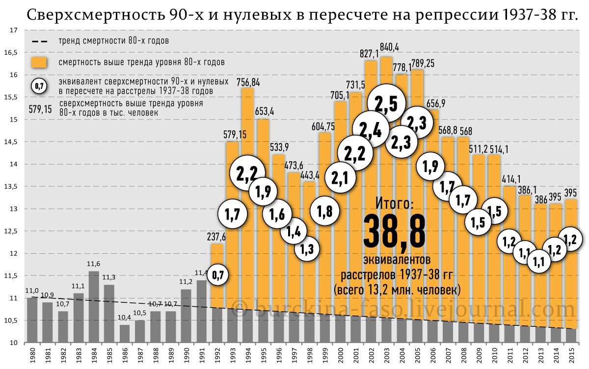

http://politrussia.com/society/kakoy-pamyati-zasluzhivaet-718/
Андрей Борцов (Warrax)
Какой памяти заслуживает Ельцин?
Уже скоро, 25 ноября, в Екатеринбурге откроется Президентский центр Б.Н. Ельцина (Ельцин Центр), «в стране будет заложена новая политическая традиция»:
«Миссия Ельцин Центра — это, прежде всего, сохранение исторического наследия первого президента России и его эпохи. Главным ядром Центра является музей. В нем использованы самые современные мультимедийные технологии, которые помогают “оживить” документы, архивные фото, артефакты. Благодаря этому экспозиция передает не только суть того драматичного времени, но и дух 90-х».
Как известно, строительство столь необходимого России сооружения обошлось государству в 7 миллиардов рублей, а также были некие частные пожертвования, причём «В центре отказались назвать фамилии жертвователей, сославшись на желание последних». Показательно, что жертвователи настолько скромны, что хотят остаться анонимами.
«ПолитРоссия» уже не раз писала о 90-х; выборочно напомню свои статьи «Можно, мы ещё раз попробуем уничтожить Россию?» и «Пропаганда: против Сталина и за 90-е», Б. Степнова «Остов 90-х. Бывали хуже времена, но не было подлей», а отрывок из статьи С. Князева «Мораль и криминал: пережитки либерализма 90-х могут сильно аукнуться России» даже процитирую:
«Дискуссию о том, существовал ли план Даллеса именно в том виде, в котором он фигурирует в публицистике, и кто был его автором на самом деле — можно продолжать до бесконечности. Но то, что ситуация в российском обществе в 1980-1990-е развивалась именно так, как предсказали авторы данного документа — это, к сожалению, факт».
Не вижу смысла пересказывать написанное — перечитайте статьи по ссылкам, чтобы освежить в памяти. А здесь посмотрим на статистику. Достаточно показателен опрос ВЦИОМ в январе 2000 г., т.е. непосредственно после того, как Ельцин устал уничтожать Россию и ушёл на пенсию.
Согласно результатам, при ответе на вопрос «Если исходить из исторической перспективы, эпоха Ельцина принесла России больше хорошего или плохого?»
«67% опрошенных считало, что она принесла стране и им лично больше плохого. Причем так считали 57,8% респондентов до 29 лет, 66,1% в возрасте 30—49 лет, и 73,2% в возрасте свыше 50 лет. Наиболее критичны в оценке эпохи Ельцина рабочие — 72,4%, руководители — 70,3% и учащиеся — 64,4%».
Мнение «больше хорошего» имело место лишь у 15,2% респондентов. Обращаю внимание на хитрую постановку вопроса: в такой формулировке к «одобрямсу» присоединяется некоторое количество наивных идеалистов, которые могут считать, что имеются временные трудности, но в исторической перспективе будет всё как в демократических агитках.
Интересно посмотреть на позитивные изменения с точки зрения опрошенных: 22,9% указали на «расширение демократии, политических прав и свобод (выборов, свободы слова, вероисповедания, выезда за рубеж)» — но «почему-то» народ уже воспринимал слово «демократ» как ругательство; 15% отметило «преодоление дефицита, очередей» — показательно не обращая внимания на причину: резкое повышение цен и падение уровня зварплат; 12,5% указали на «появление возможности открыть свое дело, обеспечивать себя материально» — особенно довольные были будущие олигархи; 11,6% высказались за «свободу действий для энергичных и способных людей» — исходя из того, что и в СССР энергичные и способные люди вполне себе реализовывались, речь идёт, видимо, о том, что при социализме не одобрялось — т.е., помимо эксплуатации трудящихся, вероятно, сюда следует отнести «свободную либеральную журналистику», «биеннале современного искусства» и тому подобное; 10,3% указали на «отстранение коммунистов от управления страной» — стандартная человеческая путаница цели и средств… Ну как, убедительно? По-моему, какие-то сомнительные преимущества, особенно если учесть, что для их реализации вовсе не надо было разваливать страну и сдаваться Западу.
Куда показательнее список негативных последствий (приведу простым перечислением для краткости): экономический кризис, падение производства; закрытие предприятий и массовая безработица; ухудшение условий жизни большей части населения; чеченская война 1994—1996 гг.; инфляция, обесценение сбережений населения; распад СССР; рост преступности и ее проникновение во власть; расхищение, разбазаривание государственной собственности и национальных богатств; невыплата зарплат, пенсий, стипендий; распад систем государственного образования, здравоохранения и социального обеспечения; политическая нестабильность и конфликты; утрата уверенности в завтрашнем дне, надежды на будущее; свобода действий для мошенников и казнокрадов; утрата Россией статуса великой державы; засилие иностранцев, усиление зависимости от Запада.
Показательно, что 45,7% выступали за «привлечение Ельцина к ответственности за незаконные действия и злоупотребления, допущенные им в годы пребывания у власти». К уничтожению СССР негативно относились 76,9%, позитив это вызывало лишь у 11,5% респондентов. Экономические реформы Е. Гайдара поддерживало 7,4%, позицию «против» имело 77% опрошенных. Очень наглядно, не так ли?
Но, согласно подписанному по времена президентства Медведевым федеральному закону от 13 мая 2008 г. № 68 «О центрах исторического наследия президентов Российской Федерации, прекративших исполнение своих полномочий» построен Ельцин-центр:
«Целями деятельности Центра являются изучение и публичное представление исторического наследия Президента Российской Федерации, прекратившего исполнение своих полномочий, как неотъемлемой части новейшей истории России, развития демократических институтов и построения правового государства».
Кстати, возникает интересный побочный вопрос: а Медведеву потом тоже центр памяти построят? Но не будем отвлекаться, здесь мы вспоминаем правление Ельцина. Рекомендую небольшое видео А. Фурсова «Горбачёв, Чубайс и Ельцин — хуже Гитлера»
Напоминаю, что в своё время Конституционный суд России классифицировал захват власти президентом Ельциным в 1993 году как преступное деяние:
Для чего такое было сделано — можно писать многотомную монографию, но вот наглядно от самого Ельцина:
Как думаете, могло ли быть такое при Сталине?
Сейчас прошло уже много времени; чтобы хорошо понимать, что такое 90-е, надо было их застать в сознательном возрасте, т.е. хотя бы подростковом, и сейчас свидетелям эпохи уже серьёзно за 30 лет. Более того — чтобы адекватно на личном опыте сравнивать 90-е, современность и социалистическое время — надо было в сознательном возрасте застать не только процесс уничтожения социализма Горбачёвым, но и более ранние времена, т.е. сейчас будет где-то 45, чтобы в 1985-м было хотя бы 15 лет…
Поэтому обращусь к наглядной инфографике от burckina-faso, основанной на официальной статистике (первичные данные см. по соотв. ссылкам).
Для оценки демографических потерь России после 1991 года необходимо сравнить прогноз численности, которые сделали демографы в 1990 году для всего СССР, с реальной динамикой численности населения РСФСР/РФ. Ее я взял тут. Получаем очень наглядный график:
«…хорошо видны все перипетии нашей непростой истории ХХ века и начала XXI, включая развал СССР. Из графика видно, что в результате Великой Отечественной войны 1941-45 годов демографическая убыль РСФСР составила 17 млн. человек. Гораздо большую убыль населения понесла Россия в результате развала СССР и правления либералов. Отталкиваясь от прогноза 1990 года демографическая убыль составила 21,6 млн. человек. Для всех бывших стран СССР эта еще больше и равна 47 млн. человек. Демографическая убыль была бы еще больше, если бы не значительный миграционный прирост, составивший за все эти годы примерно 7 млн. человек».
http://burckina-faso.livejournal.com/1204148.html
Либералы очень любят приводить как пример «жуткие репрессии при Сталине». Что ж, вот вам ещё одна нагляднейшая инфографика, даже без анализа «каков процент приговоров был справедлив», пусть будет по-максимуму «все ни в чём не виновны»:

http://burckina-faso.livejournal.com/1273757.html
Наглядно? И ещё одно наглядное пособие про жизнь победителей и побеждённых:
http://burckina-faso.livejournal.com/1271219.html
Тоже, на мой взгляд, наглядная картина последствий «реформ» Горбачёва-Ельцина.
Конечно, есть определённая группа населения, которая придерживается позиции «да пусть нация вымирает, лишь бы остаткам жилось хорошо!».
Смотрим на ещё один график:

http://burckina-faso.livejournal.com/756505.html
Всё строго по официальным данным Росстата. Однако есть толстый-претолстый нюанс:
«По идеологическим соображениям категория “бедность” в Советском Союзе не использовалась, а ее аналогом служило понятие “малообеспеченность”, которое впервые стало применяться в начале 1970-х при разработке программы помощи детям в малообеспеченных семьях. Однако, регулируя минимальную оплату труда, государство опиралось на категории “минимального потребительского бюджета”. После либерализации цен в 1992 году доходы 70 проц. российских граждан опустились ниже уровня прожиточного минимума советского периода. Для того, чтобы выявить наиболее нуждающихся в социальной поддержке в новых экономических условиях, пришлось изменить границу бедности, и подход к определению прожиточного минимума был пересмотрен: минимальная потребительская корзина 1992 года оказалась в два раза дешевле аналогичной корзины советского периода».
Таким образом, в 1002-м году заявлялось о 33,5% малоимущих, но по советским нормам их число было гораздо больше. И таки да — сейчас официальная статистика имеет ровно ту же подтасовку. Более того, нельзя забывать о том, что многие базовые потребности в СССР были бесплатными (медицина, образование) или почти бесплатными (ЖКХ), квартиры реально давали бесплатно, и т.д. и т.п. Таким образом, реальный вред от свершённого Горбачёвым и Ельциным ещё значительнее, чем кажется на первый взгляд.
По сути: уверенность в завтрашнем дне была заменена на необходимость выживания для подавляющего большинства населения. Как говорили древние: «О мёртвых либо хорошее, либо правду», поэтому завершу статью правдой «с той стороны», публикация «Toasting Yeltsin» («Тост за Ельцина») в The Guardian от 25.04.2007:
«Причина высокой оценки Ельцина на Западе — та же самая, по которой его ненавидят в России: с точки зрения Запада он был лучшим президентом России в истории. Он не только пресмыкался перед западными интересами, но и руководил почти окончательным уничтожением своей страны как политической и военной силы на мировой арене. Он втоптал Россию в грязь, чтобы нам не пришлось делать это самим.
Да, было бы прекрасно, если бы в посткоммунистический период российская экономика достигла расцвета и российскому народу не пришлось бы столько страдать, но, если платой за устранение серьезного соперника с мировой арены и получение доступа к ее гигантским и стратегически важным природным ресурсам является деградация и обнищание целого народа, за вычетом горстки счастливых победителей лотереи и бандитов, тогда игра стоит свеч, верно?».
Создание «Центра Ельцина» — это смачный харчок на Россию, на страну и народ.
Сегодня отношение к Ельцину — это «лакмусовая бумажка» (так же, как и к Сталину, только «наоборот»): если кто считает, что Ельцин заслуживает хоть какого-либо уважения (ведь свобода лучше несвободы наличием свободы!) — это не просто наивный заблуждающийся, а последователь курса уничтожения России и русского народа.
ноябрь 2015